A satellite rangefinder, live multiplayer scorecards, a real handicap, and a caddie that knows your bag — one app for the golf you actually play: against your friends.
Satellite imagery with live GPS distances to front, center, and back — plus a plays-like number that folds in elevation, wind, and temperature, so 319 reads as the 311 it actually plays.
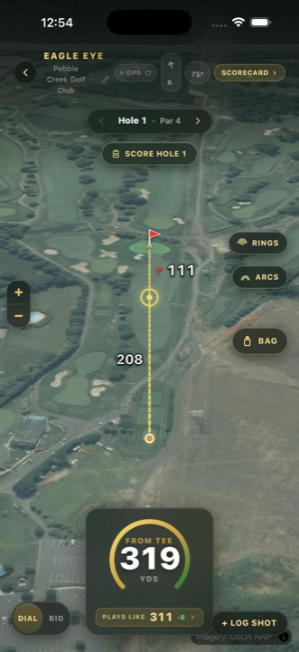
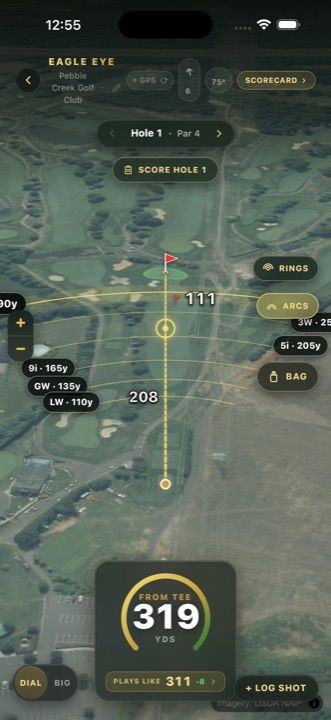
Start a match, share a four-letter code, and every phone in the group becomes the same scorecard — leaders, birdies, and blowups updating hole by hole.
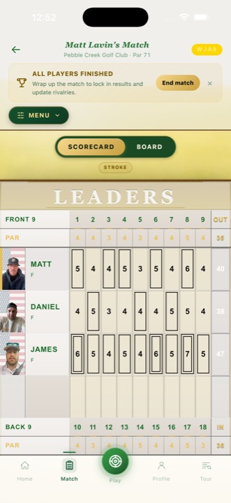
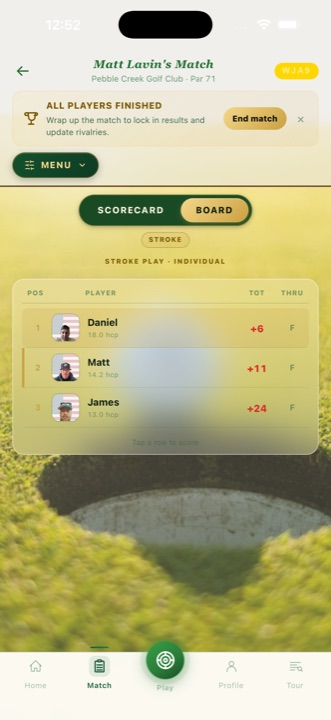
Ask about a shot, a hole, or your game. Answers come from your measured club distances and your Strokes Gained profile — not generic tips.
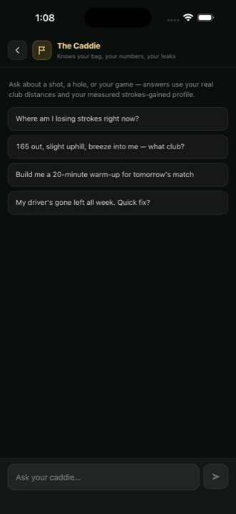
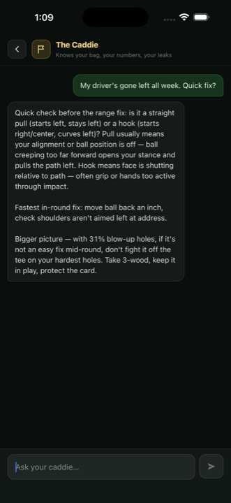
Every round — solo or match — feeds a WHS-method Handicap Index, Strokes Gained across your whole game, and a practice plan aimed at the exact place you're bleeding strokes.
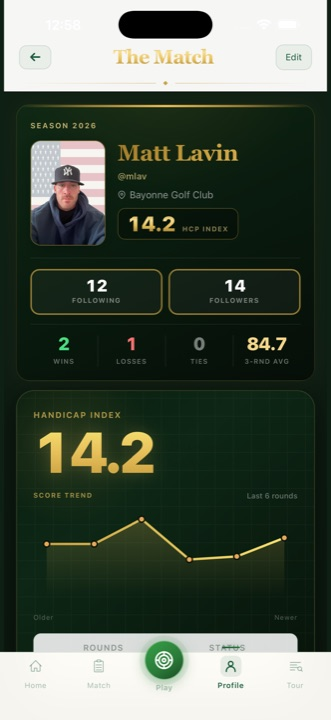
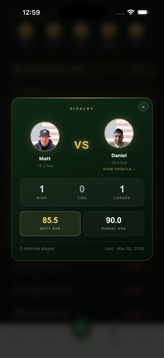
The Match earns its spot in your bag before you ever step on the course. It already knows your game — your misses, your danger holes, your real club distances — and turns that into work that's yours alone.
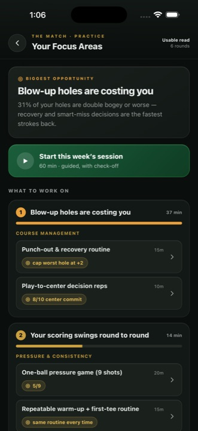
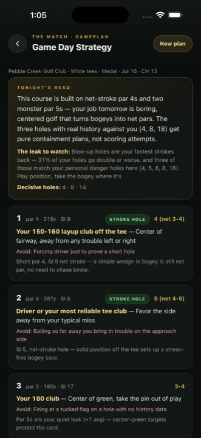
Nothing here is a bolt-on. Each surface feeds the next — shots become stats, stats become strategy, strategy becomes bragging rights.
Satellite rangefinder with plays-like distances and club arcs from your own bag.
Live in the betaReal-time multiplayer scorecards — stroke, match, and team formats, guests included.
Live in the betaWHS-method: best 8 of your last 20, net double bogey, gender-correct tee ratings.
Live in the betaOff the tee, approach, around the green, and putting — measured, not guessed.
Live in the betaAI that answers from your real club distances and your measured SG profile.
Live in the betaTee-to-green strategy priced for your dispersion — not a pro's.
Live in the betaLifetime head-to-head records with every friend you play. Every round is a chapter.
Live in the betaFocus areas generated from your data, with drills that target the leak.
Live in the betaThe Tour tab carries live professional leaderboards right next to your own card — position, score, today's round, and holes thru, refreshing while you watch.
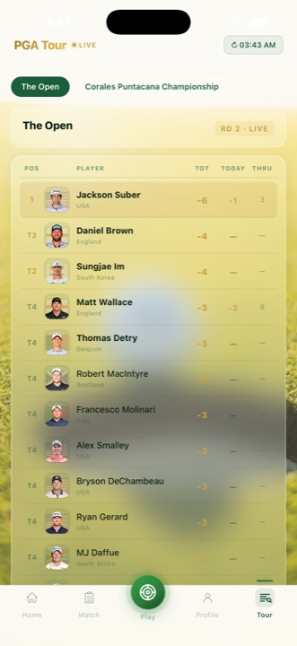
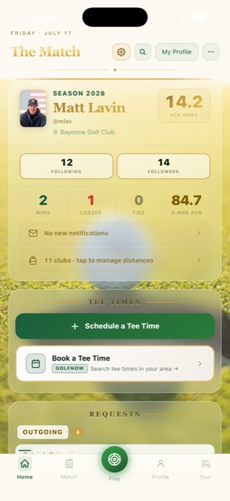
Grab your group. Share a code. Settle it on the card.
Play the beta